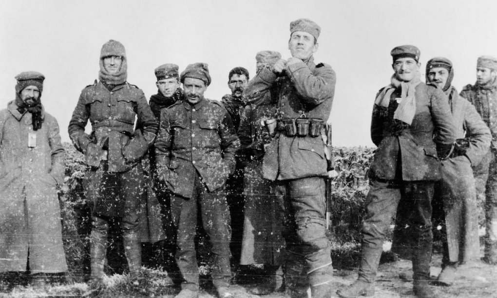
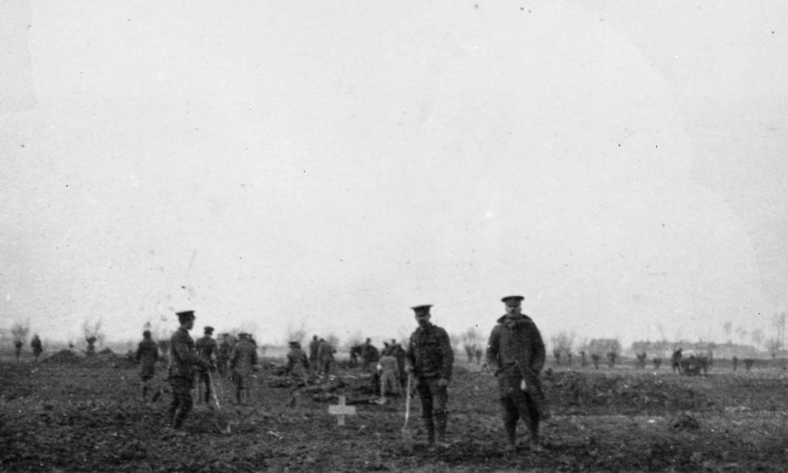

Thousands of troops ceased fire along the front lines of World War I on Christmas Day 1914,
an event described as a miracle in the bloody war.
President Vladimir Putin on January 5 instructed the Defense Minister to cease fire in Ukraine from 12:00 on January 6 to 0:00 on January 8,
on the occasion of Orthodox Christmas. The order was given at the request of Patriarch Kirill, leader of the Russian Orthodox Church.
It is unclear how Russia's unilateral ceasefire will affect the battlefield, after Ukrainian President Volodymyr Zelensky said it was a "trick" by Russia to stop the momentum of Ukrainian forces in the Donbass.
However, the Ukrainian Defense Ministry announced on its official Twitter account that it is committed to "not shooting in the back"
of Russian soldiers celebrating Christmas during the ceasefire period.
Historically, the world has witnessed a "miracle" armistice on Christmas Day 1914, when thousands of British, Belgian and French soldiers laid down their weapons,
stepped out of the trenches and enjoyed the holiday with their troops. German soldiers on the other side of the front line on the Western Front of World War I.
This is considered a rare moment of peace in a war that left more than 15 million people dead.
As World War I raged, Pope Benedict XV, who was elected in September 1914,
called for an armistice on Christmas Day that year, but was not accepted by the warring governments.
However, the misery of fighting in the muddy winter trenches seems to have prompted the soldiers of the two warring sides to agree to a truce among themselves.
A picture depicting the exchange of soldiers from both sides was published in the British media in 1915. Photo: Guardian.
Historians still dispute the exact details of this event, but most believe that about 100,000 soldiers,
or two-thirds of the fighting force, stopped fighting on Christmas Day 1914.
The armistice seemed to have begun when soldiers in the trenches sang Christmas carols on the night of December 24, 1914.
"The night was full of beautiful moonlight, snow covered everywhere," said Private Albert Moren of Britain's Royal West Surrey Regiment.
"First the Germans sang their song, then we sang ours. When we sang 'O Come, All Ye Faithful', the Germans immediately sang along
to the same tune as the Latin lyrics of 'Adeste'. Fideles'. I think it's the most extraordinary thing for the soldiers of both countries to
sing the same song in the middle of the war," private Graham Williams of the 5th London Infantry Brigade wrote in his diary.
The next morning, German soldiers in several areas left the trenches and chanted "Merry Christmas" in English, before soldiers on the other side
stepped out carefully to greet them. Elsewhere, German soldiers held up signs that read: "You don't shoot, we don't shoot."
Soldiers from both sides exchanged gifts such as cigarettes, food and hats throughout December 25. The Christmas armistice also allowed forces
on both sides to bury the dead, after their bodies had been lying in the dead zone between the two fronts for weeks before that.
Various forms of communication were also recorded along the western front lines. One said that British soldiers had their hair cut by a German
soldier who worked as a barber before the war, while another held a pork roast for both sides to celebrate.

British and German soldiers pose for a photo together in the dead zone between two trenches in Belgium on Christmas day 1914.
The armistice was widespread on the front, but not everywhere. Some documents show that the two sides are still fighting at several locations,
including at least two cases where soldiers were shot by the enemy while trying to say hello.
The brief cease-fire ended on December 25th, in some places after New Year's Eve. "I miss the stillness, the ghastly sound of
stillness. It was a brief period of peace in a terrible war," recalled Alfred Anderson,
a veteran of the British Scottish Infantry Regiment.
There were rare moments of peace for the duration of the war, but not on the scale of the Christmas Armistice of 1914.
For many people at the time, the Christmas armistice was not an example of chivalry in the midst of hostilities,
but merely an act of disobedience by soldiers on the battlefield and in protest against the commanders.
The two sides' trenches were only about 30 meters apart, making it possible for soldiers to hear and smell the enemy's food,
which made it easy for them to empathize with those on the other side of the front line.

Soldiers on both sides buried those killed in the attacks before December 25, 1914.
General Horace Smith-Dorrien, commander of the British 2nd Army, considered that it was very dangerous to keep soldiers close to the enemy.
He ordered his subordinates to forbid soldiers from "friendly communication with the enemy" of any kind. "Soldiers in the trenches near the enemy
are very easy to lose their fighting spirit and carry the ideology of 'reconciliation and respect'," he warned in a memo sent to his subordinates on December 5.
This is confirmed by the account of British veteran Murdoch Wood in 1930. "The conclusion I held for many years after the war was that no more
shots would be fired after that point, if the world were to command to let our soldiers decide the situation on their own," he said.